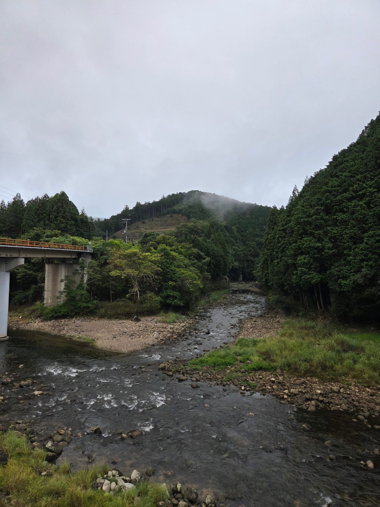

01
EXPERIENCE-BASED LEARNING
学生と創る、あなたとの一年と、この一皿。
若年層の獲得と耕作放棄地活用のための体験型学習プロジェクト。田植えから収穫、食事までを一本の物語として設計し、離れている期間はテクノロジーで作物との距離をつなぎます。2026年度 奈良市 産学官連携プラットフォーム 補助金の採択事業です。
- 現地での田植え・苗植えと収穫の体験プログラム運営
- 成長配信・NFT・LINEスタンプによる継続的な接点づくり
- 耕作放棄地をイベントフィールドとして再定義する取り組み
